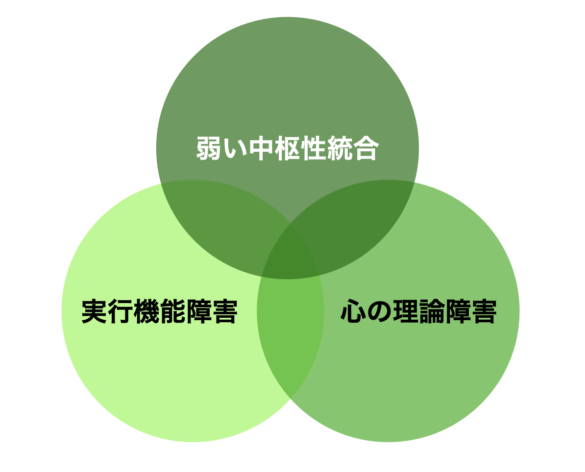

ASDと心理学
- 自閉スペクトラム症(ASD)
- 脳
- 心理
- 薬
- 支援
ASDの心理の主要な3つの仮説
これまでのASD研究では、社会性やコミュニケーションの問題に主眼が置かれ、その実態や神経基盤について、「心の理論」や共同注意、顔認ちやミラーニューロンといったさまざまな観点から検討が行われてきました（参考文献）。しかし、ASDにおける主な特徴が、結局どのような機能の問題であるのかという点については、さまざまな見解と相違と変遷があり、いまだ統一的なものは得られていません。
ASDのある人の困難の背景を説明する主要な仮説には、心の理論障害仮説、実行機能障害仮説、弱い中枢性統合仮説などがあります。近年の流れとして、一つの心理学的仮説で説明するのではなく、三つの仮説が相互に関連しあっている、という考え方になりつつあります。例えば、Pelicano（2010）は、実行機能と弱い中枢性統合の2要因から、ASD児における心の理論の発達変化を説明しようとしています。
心の理論障害仮説
社会性の発達初期には「共同注意(Joint Attention)」の獲得があります。共同注意とは「他者と注意を共有する能力」です。共同注意は、定型発達（自閉症など特異な発達ではなく、一般的な発達のこと）では生後10か月頃から1歳過ぎにかけて発達していきます。
1歳前後の乳幼児は、見てほしいものがあると「あ!あ!」と指さしで伝えようとします。また、「ほら、電車を見てごらん」と指さすと、そちらに目を向けることができます。指さす方向に何かがある、という相手の意図を理解しているのです。これが「共同注意」です。
| 行動 | 概要 |
|---|---|
| 視線の追従 | 他者の視線の先にある対象に視線を向ける |
| 社会的参照 | 不確かな状況で、大人の表情や反応を見て、次の行動を選択する |
| ショウイング | 自分が手にしたものを他者に差し出して見せる |
| ギビング | 他者に物を差し出して渡す |
| 要求の指さし | 自分が欲しいものを指して知らせる |
| 叙述の指さし | 関心を共有するための指さし |
| 応答の指さし | 「〜はどれ？」に指さしで答える |
共同注意は、3項関係の獲得として言語発達の前提にもなっています。相手が注意を向けているものに、赤ちゃんが注意を向けた状態で「りんご」と聞くことで、ものと名称がつながっていくのです。言語発達の遅れが見られるのも、共同注意の獲得の問題と関連しています。視線の意味をうまく理解できないのも、共同注意の獲得がうまくいっていないためです。ASDのある子どもは、この共同注意の獲得が困難です。
社会性の発達の次の段階として、「心の理論（Theory of Mind:ToM）」の獲得があります。心の理論とは、「他者の心の状態を理解する」能力ということができます。この「他者の心の状態を思い描く過程」はメンタライジング(心理化)という用語でも説明されています。メンタライジングには、前頭前野がかかわっています。（参考文献）
この理論は、霊長類研究学者のデビット・プレマック（1925〜2015）らの研究理論から生み出されたものです。プレマックらは、チンパンジーなどの霊長類が、あざむき行動などで他の仲間や他の種の個体の心の状態を推測しているように行動することに注目しました。そして、自分や他者の目的や意図、知識や信念、推測、ふり、好みなどの内容が理解できれば、その動物や人間は「心の理論」をもつと考えました。この考え方は、1978年に「チンパンジーは心の理論を持つか？」という論文でまとめられました。
理論という科学用語を使った理由については、二つの大きな理由があります。一つは、行動を見ることはできますが、その背後にある心の状態は直接観察できないので、科学理論のように推論にもとづいて研究されること。もう一つは、心についての理論を構成すれば、科学理論と同じように、他の人間や動物の行動をある程度、予測できることです。この二つの理由から、「心の理論」と名づけたのです。その後、心の理論は1980年代以降に「哲学研究」「霊長類研究」「発達心理学研究」「自閉症研究」の四つの分野で発展していきました。
心の理論の有名な課題として「サリーとアンの課題（誤信念課題）」があります。2歳ぐらいの幼児は、全部を知っている自分の視点から「アンの箱」と答えてしまいます。定型発達の4歳児は、「サリーは知らないからかごの中を探す」と答えることができるようになります。そのため、以前は心の理論は獲得は4歳、と考えられていました。近年、視線などを用いたさまざまな実験により、1歳台の赤ちゃんも心の理論を理解していることがわかってきました。「サリーとアンの課題」を通過するためには、「心の理論」だけでなく言語や実行機能なども必要なので、それらの能力がほぼそろうのが4歳である、という理解に変わってきています。
ASDのある子どもは、高機能であっても「サリーとアンの課題」を通過する年齢が遅れることから、心の理論の障害があるために、社会性の障害が生じると考えられていました。
しかし、高機能ASDの場合は、「サリーとアンの課題」を通過する人もいること多くの研究で示されたことを受けて（参考文献）、現在では皮肉や比喩の理解といった、ASDにおける高次の心の理論問題へと研究の焦点が移っています。
心の理論障害仮説は、他者の意図をくむことの困難は説明できるのですが、その他の症状を説明することができません。
実行機能障害仮説
ASDでは、困難さを示すのは実行機能の中の柔軟性（シフティング、切り替え）やプランニングなどであると考えられてきました（参考文献）。また、変化に対して自分の予期していた構え（枠組み）を切り替えていくことなどは、ASDにとって苦手なところです。それがうまくできないために、ASDの症状である「こだわり」や「変化への弱さ」が生じている、というのが実行機能障害仮説の考え方です。
弱い中枢性統合仮説
弱い中枢性統合(Weak Central Coherence: WCC)とは、ASDのある人に見られる「部分から全体をとらえる力の弱さ」を説明しようとする仮説です（参考文献）。ASDのある人は、「背景にあるさまざまな情報を無視して、部分に着目する」という特徴的な情報処理をしており、埋没図形テストやウェスクラー系の知能検査の「積木模様」で高い得点を取ることが知られています。全体的な状況や文脈をとらえないという視点ではASDの弱さととらえられますが、背景に左右されず対象のみを認識できる（場独立）という視点からは強みと考えることもできます。
高機能ASDの場合、言語は十分に獲得できているにもかかわらず、コミュニケーションがうまくいかないということが見られます。これは、文脈をとらえられないために、状況にあった言語表現が困難になる、という語用論の問題があるからです。皮肉や嫌みが難しいのも文脈がとらえられず、言語のみで理解してしまうため、と考えることができます。また、細部に「こだわる」あまり話が冗長になり何が言いたいのかわからなかったり、与えられた時間内に達成できなかったりすることも見られます。
ソーシャルモチベーション理論
ソーシャルモチベーションというのは、自分を取り巻く外界の対人的なかかわりに対するモチベーション(動機づけ)です。行動レベルでは、対人志向、対人的探索と好み、対人関係維持などに対する関心、意欲といってもよいでしょう。脳の部位としては、扁桃体や腹側線条体、前頭前野などがネットワークとしてのモチベーションを維持します。
- Social orienting(対人志向):対人的なシグナル（表情、視線等）に優先的に注意を向ける。
- Seeking and linking(対人的探索と好み):対人的な世界に価値を見出すこと。対人関係自体がモチベーションとなる。幼児は協調することを好む。
- Social maintaining(対人関係維持):長期間他者とかかわりたいという願望。
定型発達の子どもは、生後すぐから物よりも人に反応します。対人的なシグナル（表情、視線等）に優先的に注意を向けます。有名なファンツの実験では、生後間もない時期から赤ちゃんは人の顔にもっとも視線を向けることが明らかになっています。他の動物と違い、人間の赤ちゃんは人の養育なしには生命すら維持できない無力な存在として生まれます。赤ちゃんが人に対してモチベーションをもつのは、生きるために必須の能力ともいえます。
一方、ASDのある赤ちゃんは、乳幼児期、手がかからなかった、あるいは手がかかって大変だった、という両方の声を聴きます。手がかからなかった、というのは、大人にかかわってほしがらなかった、ほとんど泣かなかいので手がかからなかった、ということです。逆に、手がかかって大変だったというのは、泣いてばかりいて、主たる養育者がなだめても泣き止まなかった、という状態でしょう。これはおそらく、出生直後から感覚過敏の症状があったために、赤ちゃんにとって外界が苦痛に満ちていたのかもしれません。また、愛着の形成がうまくいかないために、主たる養育者があやしても安定しなかったものと思われます。
このように、定型発達の子どもには当たり前にみられる他者に対するモチベーションが、ASDの場合は極端に低下していると考えるのが、ソーシャルモチベーション仮説です。ASDのある赤ちゃんに見られる、視線が合わないという症状も、ソーシャルモチベーションが低いからということで説明がつきます。
この立場から考えると、ASDのある赤ちゃんの発達を支えるためには、人への関心が持てるようなかかわりが重要となります。（ASDの支援についてはこちら）
神経構成主義的アプローチ
ホームで述べたような、神経構成主義的観点からのASD研究として、千住(2012)が挙げられます。千住は、ASD児においては従来あまり生じないとされてきた「あくびの伝播」が、表示されたあくびを必ず見るような条件下ではASD児でも生じるという自らの研究結果などから、「社会的な情報処理を行う能力そのものの障害よりも、社会的な刺激に自発的に注意を向け、自発的に処理を行う傾向」が、ASD児における対人コミュニケーションの問題の背景にある可能性を指摘しています。
発達性協調運動障害
ASDにおける運動面の問題は、発達性運動症/障害(developmental cordination disorder: DCD)の合併（一体化）という観点から検討されています。DCDの主な特徴は、
- 運動強調を必要とする日常的な運動の技能が、暦年齢や知能から期待される水準に比して著しく劣っている。
- 運動技能の問題により、学業生活や日常生活の活動に明らかな支障がある。
- 脳性麻酔や筋ジストロフィーなどの身体疾患・神経学的障害によるものではない
の3点になります（参考文献）。これまでの研究を見ると、ASD児において、DCDのリスクがあると判定されるものが多いことが一貫して指摘されています（参考文献）。
DCDのある子どもで特に問題となるのは、彼らの運動機能の問題が学校生活や日常生活全般に悪影響を及ぼしうるという点です。DCD児においては、その運動機能の問題から様々な身体活動（例えば、学校での体育や工作、楽器の演奏、休み時間の外遊び）への消極性や不参加が庄司、そこから自尊心の低下や抑うつなどの二次障害が生じやすいことが多くの研究で指摘されています（参考文献）。こうした運動き脳の低さから二次的に生じる心理社会的問題の存在は、ASD児においても同様であろうと思われます。
また、Hirata et al.（2015）はASD児におけるDCDの可能性の年齢横断的変化について検討したところ、初回の測定で成績が低く、DCDのリスクありと判定される水準にあった者達のみ、測定回数を重ねるにつれ成績が上昇する傾向にあることを明らかにしました（しかし、得点が上昇した者達でも、DCDのリスクありと判定される水準にある場合が多かったです）。この結果は、ASD児における低成績は、運動機能の低さの直接的な現れでなく、新奇の運動課題に対する適応の問題として捉えられる可能性を示唆するものです。こうして見るとASD児に対しては、課題の新奇性を低下させる状況設定が、運動アセスメントの得点上昇をもたらす可能性があると言えます。
内部モデル
内部モデルとは、脳から筋肉への運動指令と、その結果生じる運動結果の連合を指します。より具体的にいうならば、ある新奇の状況や課題に対する経験の蓄積の結果、「この状況で、この目的の為にこのように身体を動かす命令を出せば、このような結果が生じる」というモデルが形成されることです。ある内部モデルが形成されると、その運動指令と結果の連合を利用して、実際に運動を行う前にその結果をあらかじめ予測することが可能となります。この予測結果は、より適切な運動指令の生成へと利用され、私たちのより巧みな運動を行うことに寄与すると考えられています。
Haswell et al.（2009）やIzawa et al.（2012）は、ASD者が運動学習の際に定型発達やADHDの者とは異なり、視覚よりも固有感覚に強く依存した内部モデルが形成されることを報告しています。Montofsky & Ewen（2011）は、こうした運動学習における固有感覚への依存は、ASD者における運動野と感覚野の結合が定型発達者より強いことの現れであると考察しており、脳における運動野と感覚野のような局所的な結合の強さと、例えば前運動野と頭頂葉のような離れた部位間の結合の弱さが、ASD者における運動障害の神経基盤ではないかとしています。
興味深いことに、ASD者においては内部モデルにおける固有感覚への依存度が高い者ほど、社会性障害が重症となることが報告されています（参考文献）。近年、内部モデルは運動制御だけでなく、観察された他者の行動や意図の理解にも寄与するものと考える立場があります（参考文献）。すなわち、内部モデルは自らの意図的な運動指令に基づく運動結果の予測を可能とするだけでなく、他者の運動を観察した場合に、自らの内部モデルを参考とすることで、その他者の行動目的や意図の予測を可能とし、社会的認知に重要な貢献をしている可能性が指摘されています。Montofsky & Ewen（2011）は、運動の内部モデルが視覚よりも固有感覚に依存して形成されていることから、ASDでは視覚的に観察された他者の行動や意図の理解に障害を示すのではないかとしています。